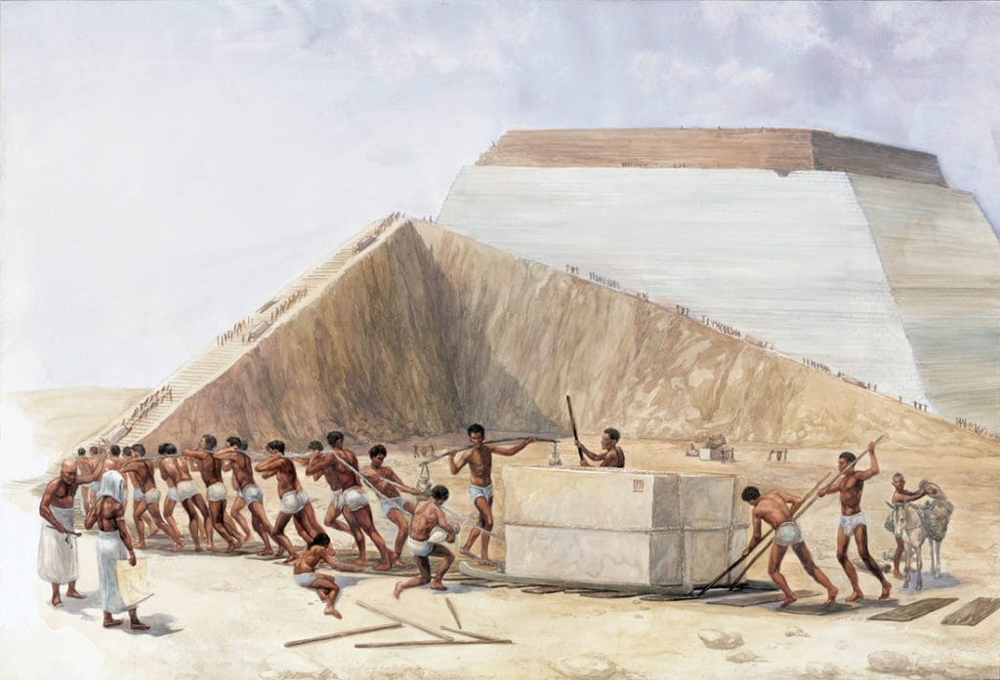
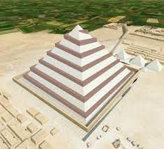
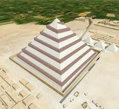
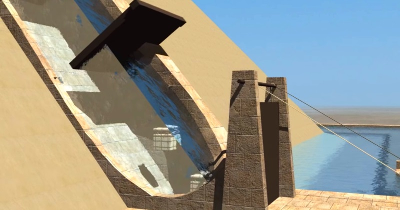
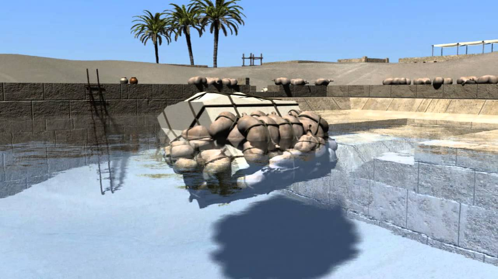
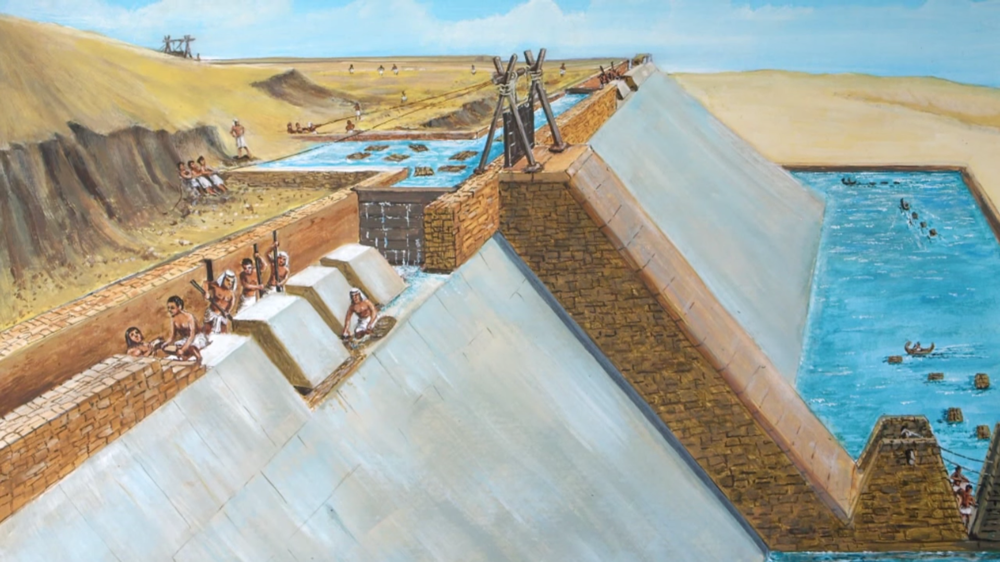
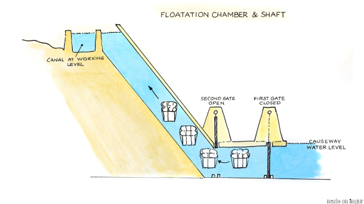

How were pyramids built?
Egyptian pyramid construction techniques are the controversial subject of many hypotheses. These techniques seem to have developed over time; later pyramids were not constructed in the same way as earlier ones. Most of the construction hypotheses are based on the belief that huge stones were carved from quarries with copper chisels, and these blocks were then dragged and lifted into position. Disagreements chiefly concern the methods used to move and place the stones. In addition to the many unresolved arguments about the construction techniques, there have been disagreements as to the kind of workforce used. The Greeks, many years after the event, believed that the pyramids must have been built by slave labor. Archaeologists now believe that the Great Pyramid of Giza (at least) was built by tens of thousands of skilled workers who camped near the pyramids and worked for a salary or as a form of tax payment until the construction was completed, pointing to workers' cemeteries discovered in 1990. For the Middle Kingdom Pyramid of Amenemhat II, there is evidence from the annal stone of the king that foreigners from Canaan were used. A number of pseudoscientific theories have been put forth to explain how the pyramids were built.
The Ramp Theory

Most Egyptologists acknowledge that ramps are the most tenable of the methods to raise the blocks, yet they acknowledge that it is an incomplete method that must be supplemented by another device. Archaeological evidence for the use of ramps has been found at the Great Pyramid of Giza and other pyramids. The method most accepted for assisting ramps is levering The archaeological record gives evidence of only small ramps and inclined causeways, not something that could have been used to construct even a majority of the monument. To add to the uncertainty, there is considerable evidence demonstrating that non-standardized or ad hoc construction methods were used in pyramid construction.
Therefore, there are many proposed ramps and there is a considerable amount of discrepancy regarding what type of ramp was used to build the pyramids. One of the widely discredited ramping methods is the large straight ramp, and it is routinely discredited on functional grounds for its massive size, lack of archaeological evidence, huge labor cost, and other problems.
Other ramps serve to correct these problems of ramp size, yet either run into critiques of functionality and limited archaeological evidence. There are zig-zagging ramps, straight ramps using the incomplete part of the superstructure, spiraling ramps supported by the superstructure and spiraling ramps leaning on the monument as a large accretion are proposed. Mark Lehner speculated that a spiraling ramp, beginning in the stone quarry to the southeast and continuing around the exterior of the pyramid, may have been used. The stone blocks may have been drawn on sleds along the ramps lubricated by water or milk.
Levering methods are considered to be the most tenable solution to complement ramping methods, partially due to Herodotus's description; and partially to the shadoof, a lever-enabled irrigation device first depicted in Egypt during the New Kingdom and found concomitantly with the Old Kingdom in Mesopotamia. In Lehner's point of view, levers should be employed to lift the top 3% of the material of the superstructure. It is important to note that the top 4% of this material comprises 1⁄3 of the total height of the monument. In other words, in Lehner's view, levers should be employed to lift a small amount of material and a great deal of vertical height of the monument.
In the milieu of levering methods, there are those that lift the block incrementally, as in repeatedly prying up alternating sides of the block and inserting wooden or stone shims to gradually move the stone up one course; and there are other methods that use a larger lever to move the block up one course in one lifting procedure. Since the discussion of construction techniques to lift the blocks attempts to resolve a gap in the archaeological and historical record with a plausible functional explanation, the following examples by Isler, Keable, and Hussey-Pailos list experimentally tested methods. Isler's method is an incremental method and, in the Nova experiment, used wooden shims or cribbing. Isler was able to lift a block up one tier in approximately one hour and 30 minutes. Peter Hodges's and Julian Keable's method is similar to Isler's method and instead used small manufactured concrete blocks as shims, wooden pallets, and a pit where their experimental tests were performed. Keable was able to perform his method in approximately 2 minutes. Scott Hussey-Pailos's method uses a simple levering device to lift a block up a course in one movement. This method was tested with materials of less strength than historical analogs (tested with materials weaker than those available in ancient Egypt), a factor of safety of 2, and lifted a 2500-pound block up one course in under a minute. This method is presented as a levering device to work complementary with Mark Lehner's idea of a combined ramp and levering techniques.
.jpeg) 

The Water Shaft Theory
  The Water Shaft Theory (WST) differs from the Ramp Theory at most points, starting with how the stones were transported. While the RT discusses dragging stones across the desert, the WST outlines that special canals were constructed all the way to the build sites, allowing the stones to float all the way there.
Floats were supposedly made of cedar wood or inflated animal skins wrapped in papyrus, and when attached to the stones would allow them to be pulled from the shore. The canals lead to a moat that went all the way around the build site perimeter, allowing blocks to be floated to the side where they were needed.
Four water pipelines were then supposedly used to float the blocks uphill and were extended as the pyramid grew. A series of gates controlled how the blocks moved upward from the moat to the top, and a pool of water on the top of the build site allowed for further floating and positioning without any dragging or real heavy lifting.
In this theory, these canals and water elevators allowed the stones to be moved pretty easily. Although there is no concrete documented evidence of this theory, traces of water throughout the structure and imperfections along the middle of all four sides have been identified to support the WST.
